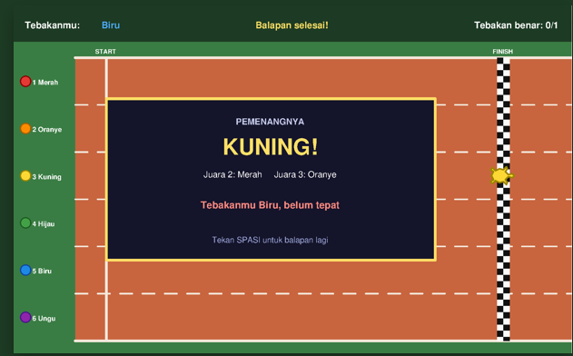
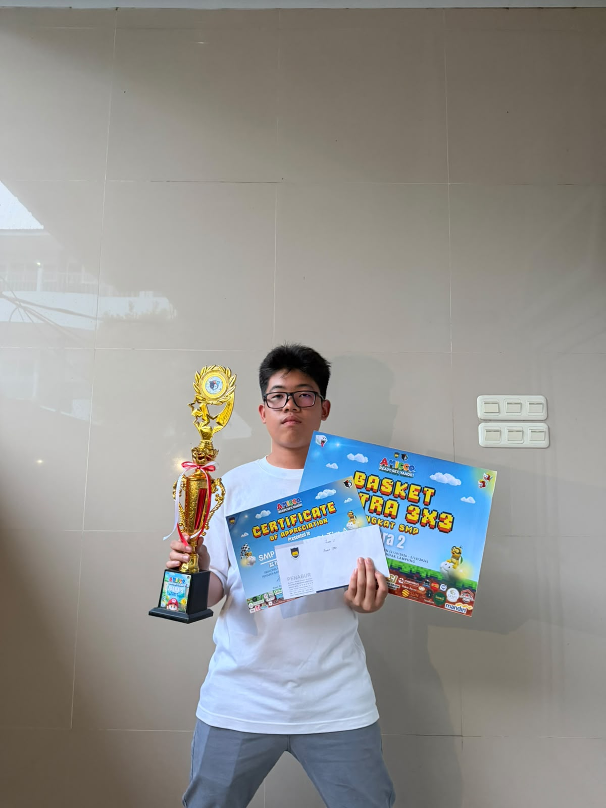

Detail Proyek: Turtle Race

Game Balap Kura-Kura
Turtle Race adalah game balap kura-kura yang
memungkinkan pemain menebak warna kura-kura
yang akan menjadi pemenang.
Game ini memiliki enam pilihan warna:
merah, oranye, kuning, hijau, biru, dan ungu.
Pemain memilih warna yang diprediksi akan menang
sebelum balapan dimulai.
Setelah balapan selesai, game menampilkan
kura-kura pemenang dan memberi tahu apakah
tebakan pemain benar atau belum tepat.
Pemain dapat menekan tombol spasi untuk
memulai balapan berikutnya.
Fitur Game
- Enam pilihan warna kura-kura.
- Sistem menebak pemenang balapan.
- Lintasan dengan garis start dan finish.
- Hasil balapan dan status tebakan pemain.
- Tombol spasi untuk balapan berikutnya.
← Kembali ke Proyek
Detail Proyek: Catatan Belajar
Catatan Belajar adalah proyek untuk menyimpan
ringkasan materi HTML dan CSS yang sedang saya pelajari.
- Merangkum tag HTML yang sering digunakan.
- Mencatat properti CSS dan penggunaannya.
- Membantu mengulang materi pemrograman web.
← Kembali ke Proyek
Prestasi Basket Saya

Juara 2 Lomba PLC BPK PENABUR
Saya berhasil meraih Juara 2 dalam lomba basket
PLC BPK PENABUR. Prestasi ini menjadi pengalaman
yang membanggakan bagi saya.
Melalui kompetisi ini, saya belajar tentang kerja
sama tim, disiplin, semangat berlatih, dan pentingnya
berusaha memberikan yang terbaik dalam setiap pertandingan.
- Kompetisi: PLC BPK PENABUR
- Cabang olahraga: Basket
- Pencapaian: Juara 2
← Kembali ke Proyek